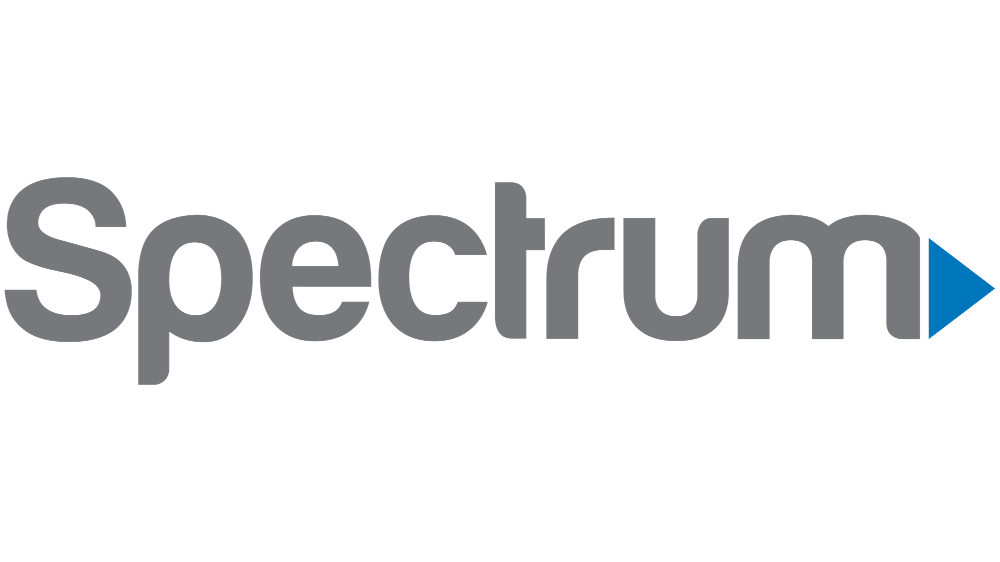

Sponsor ACM Today!
We’re Texas ACM, the largest organization for computer science students at The University of Texas at Austin, and a chapter of the National Association for Computing Machinery. Our mission is to build a supportive community for computer science students, enabling long-term academic and career success. Our standard partnership is focused on recruiting. We can help recommend a plan based on your target hiring goal, providing estimated numbers based on our experience with companies who select particular packages and host the recommended number of events.
| RECRUITING PACKAGES | GOLD | SILVER |
|---|---|---|
| Pricing | $7000/yr | $2500/yr |
| Goals: Host more engaging events with the community | ✅ | ✅ |
| Goals: Increase your company’s exposure to competitive CS hires | ✅ | ✅ |
| Goals: Make lasting, deep connections with competitive CS hires | ✅ | |
| Goals: Target number of hires based on historical results from our partners | 4-12 | 2-4 |
| Events: Partner with ACM Events • Examples include General Meetings, Hack Nights, Game Nights, etc. • Coordinate with us to host your own custom events! | 4 per year | 2 per year |
| Events: Attend Fall corporate banquet • Attracts 90 - 100 students • Develop quality relationships with students as compared to a career fair • Local catering in a casual environment for professionals and students alike | ✅ | ✅ |
| Perks: Your merch & flyers in the org office • Distribute shirts, stickers, etc. to ACM members and increase exposure | ✅ | ✅ |
| Perks: Access to our marketing channels • Access to on-campus advertising of your programs and events • Access to over 1000+ members on our online platforms (Discord, Instagram, email newsletter, etc.) | ✅ | ✅ |
| Perks: Access Corporate Banquet resume book • Hire corporate banquet attendees on time for the recruiting season | ✅ | ✅ |
| Perks: Access to ACM-wide resume book • Diverse range of resumes from freshmen to seniors looking for internships, exploratory programs, and new grad positions | ✅ | |
| Perks: Demographics and email collection at every event • Had great conversations with our members but didn’t get any contact information? Access opt-in email collection at event-sign in to directly reach out to them, and receive demographic reports after the event | ✅ | |
| Perks: Priority for September events • Stay on track for Fall semester recruiting • Gold tier sponsors get higher priority for September events | ✅ |
FAQ
Q: What sorts of events do you hold?
We run dozens of events every semester, spanning the three pillars of our mission: community, classes and career - Community Building: Keynote speakers, ice cream socials, retreat, hack nights - Academic Support: CS101, mentorship, supplemental lectures for core classes - Career Success: Tech talks, hack nights, resume workshops, banquets - See our past events on Instagram: texas_acm
Q: What is it like to hire at UT CS?
We run dozens of events every semester, spanning the three pillars of our mission: community, classes and career - Community Building: Keynote speakers, ice cream socials, retreat, hack nights - Academic Support: CS101, mentorship, supplemental lectures for core classes - Career Success: Tech talks, hack nights, resume workshops, banquets - See our past events on Instagram: texas_acm
- UT Austin is proud to have a Top 10 CS program nationwide. We have strong students who are passionate about what they do.
- Disproportionally high impact for our size (500+ students per graduation year), and the small size creates a strongly connected student and alumni community.
- A unique, strong systems track as part of the core curriculum: by sophomore year, all computer science students take computer architecture and operating systems in which they do the following:
- The System Emulator project where students implement a complete processor pipeline, including hazard controls, forwarding, and caching
- Building common components from scratch in operating systems such as memory allocators, virtual memory management, file systems, and threading APIs
- About 80% of our community are CS majors, but we maintain an open-door approach to events and attract students from across the university (everyone from economics to engineering to MIS to Liberal Arts).
- Our community is split evenly by class year, about 20% freshmen, 25% sophomores, 30% juniors, 20% seniors, 5% grad students.
- We have a reputation for holding high-value events and initiatives that students love. We make a point of being inclusive and welcoming at all events, and marketing across a variety of channels (not just CS!)
- An AMA series with a local venture capital fund
- Brought founders and technical leaders to campus, reaching 100+ attendees
- Created significant brand awareness for the fund
- informal networking led to recruiting opportunities for their portfolio companies
- We hosted a tech talk featuring a CTO and engineers from a local startup, which resulted in new hires and strong brand awareness for a B2B SaaS company. Attendees even plastered their laptops with branded stickers, and their logo hats around campus has become a common sight.
- We helped the marketing efforts of a new ride-sharing app to our community. Their launch promotion included a week of free rides. In two weeks, we drove over 210 sign ups to their app and 106 first time rides.
- We initiated a series of "Hack Nights" with a student-focused startup investor. During these events, students would start projects in a single night.
- One project gained significant attention and was featured on the front page of Hacker News
- Student-made startups went on to acquire funding from said investor
Sponsors
